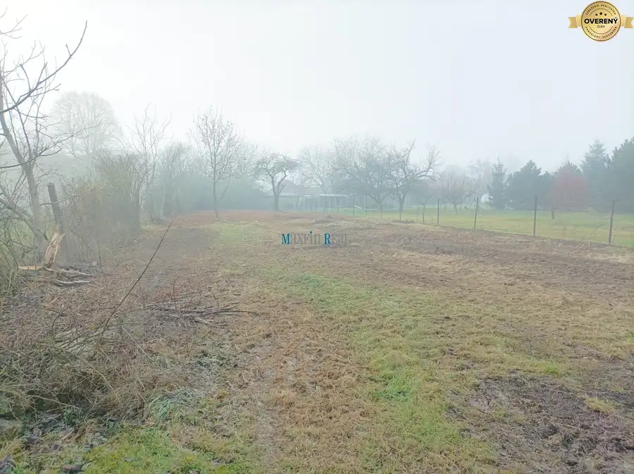
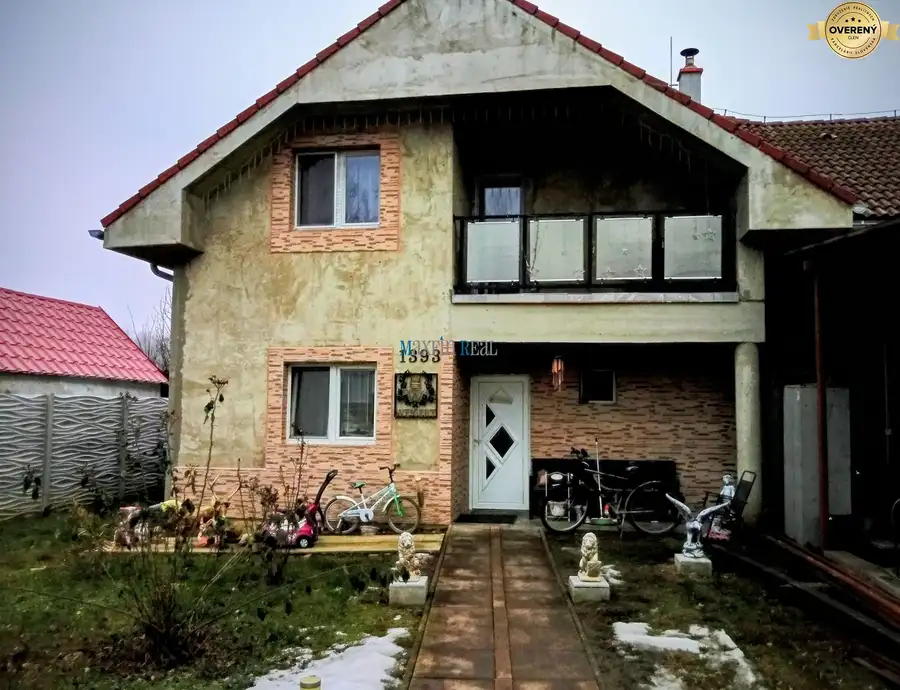
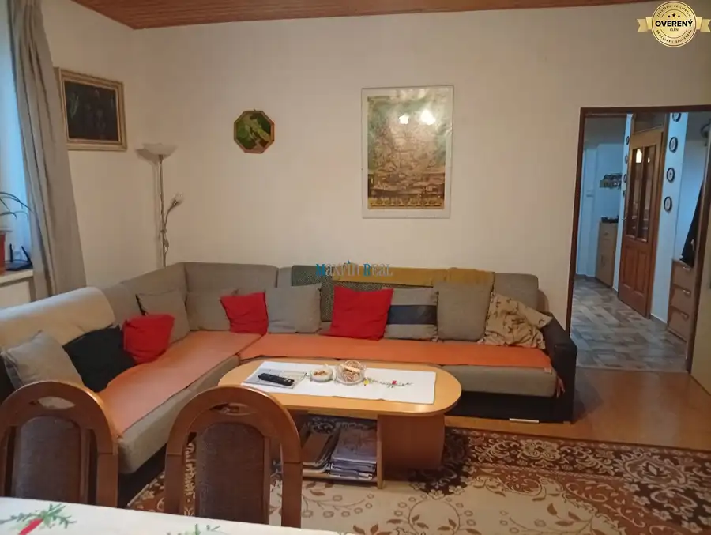

Predaj · Rodinné domy
Rodinný dom Lužianky - predaj
Lužianky
105 000 €169 € za m²
- Dispozícia3-izbový
- Plocha622 m²
- Stavpôvodný
- Vlastníctvoosobné
O nehnuteľnosti
Úžitková plocha domu je 126m2. Dom je vhodný na kompletnú rekonštrukciu ale aj ako investícia na výstavbu rodinných domov.
Dom sa nachádza v obci s dobrou občianskou vybavenosťou a je napojený na všetky IS.
Dĺžka pozemku celkom 74m, šírka pozemku 14m, celková rozloha 1043m2.
Dispozičné riešenie:
- vstupná chodba
- špajza
- dve nepriechodné izby
- kuchyňa
- kúpeľňa
- špajza
- izba
Cena 85.000,-€
V cene je zahrnutý kompletný realitný aj právny servis a poplatky spojené s prevodom nehnuteľnosti.
Bližšie informácie na tel.čísle ,
V prípade záujmu Vám vieme zabezpečiť výhodnú hypotéku a poistenie.
Sme členom REALITNEJ ÚNIE SLOVENSKEJ REPUBLIKY
Parametre
| Rozloha pozemku | 487 m² |
|---|---|
| Zastavaná plocha | 622 m² |
| Poschodie | neuvedené |
| Počet izieb | 3 |
| Vlastníctvo | osobné |
| Stav | pôvodný |
| Odvoz odpadu | áno |
| Voda | verejný vodovod |
| El. napätie | 230V |
| Plyn | áno |
| Kanalizácia | áno |
| Kúpeľňa | áno |
| Vykurovanie | vlastné - plyn |
| Pivnica | nie |
| Inžinierske siete | áno |
| Postavené z | Zmiešané |
| Zateplený objekt | nie |
| Strecha | pôvodná |
| Predzáhradka | áno |
| Okná | drevené |
| Terén | rovina |
| Prístupová cesta | asfaltová cesta |
| Dátum zverejnenia | 26. 10. 2023 |
Kde to je
Ďalšie ponuky
Celá ponukaMohlo by Vás zaujímať

Pozemok2 81 500 €Pozemok- Čifáre na predaj Čifáre 1208 m² Maxfin Real Vám ponúka na predaj krásny rovinatý pozemok v obci Čifáre o rozlohe 1208 m2. Pozemok sa nachádza v zastavanom území obce, inžinierske…
Rodinné domy5 320 000 €RD na predaj Vlčany Vlčany 8-izbový300 m² Maxfin Real Vám ponúka na predaj dvojpodlažný rodinný dom – Vlčany, okres Šaľa Ponúkame na predaj priestranný dvojpodlažný rodinný dom s…
Rodinné domy10 135 000 €RD NA PREDAJ Mojmírovce Mojmírovce 4-izbový362 m² Ponúkame na predaj prerobený rodinný dom v obci Mojmírovce, vzdialenej len 15 km od Nitry. Dom bol postavený v 60-tych rokoch vďaka rekonštrukcii…